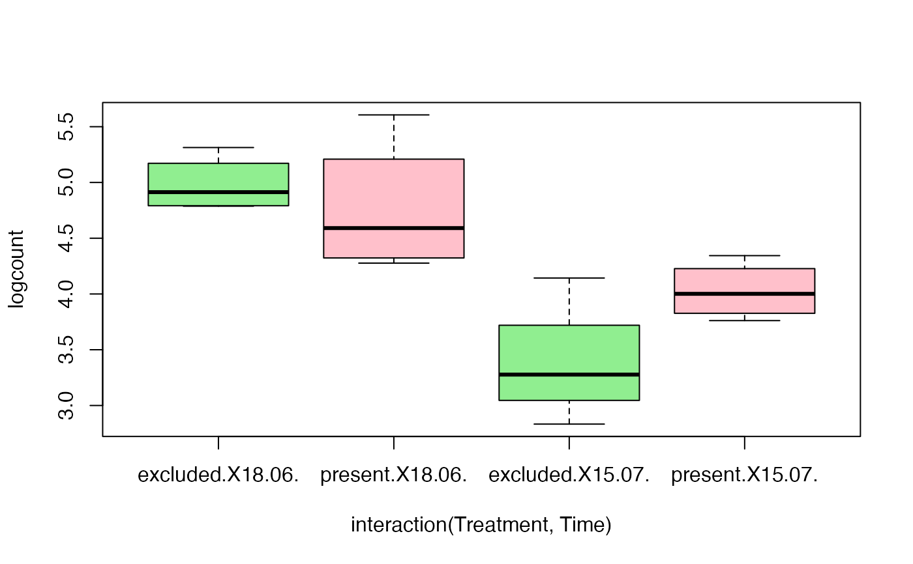

Aphid data as a BACI design
aphidsBACI.RdA subset from a study of the effects of bird exclusion on biological control of aphids in a German oat
field (Grass et al. 2017). Many thanks to Ingo for providing the raw data. The full data are
in aphids, here we provide just two sampling times, 3 days and 30 days after netting.
OK, this is not quite a BACI design, 3 days after netting is not quite "before" but effects at this
point should be negligible...
There were eight plots, four with plastic netting to exclude birds, and four without. Aphid abundance was counted on 5 shoots per plot. The expectation was that aphid numbers would decrease on bird exclusion, because an important food source to tree sparrows is aphid predators, hoverflies and ladybird beetles, so presence of birds may be limit the effectiveness of a biological control of aphids.
Usage
data(aphidsBACI)Format
A dataframe containing:
- Plot
The plot ID, a factor with eight levels
- Treatment
A factor indicating whether birds were excluded,
excludedorpresent.- Time
The data of sampling (June 18th or July 15th, 3 and 30 days after netting, respectively)
- counts
Aphid abundance (counts)
- logcount
log(y+1)-transformed aphid abundance
References
Grass et al. (2017) Insectivorous birds disrupt biological control of cereal aphids. Ecology, 98 1583-90.
Examples
data(aphidsBACI)
plot(logcount~interaction(Treatment,Time),data=aphidsBACI,col=c("lightgreen","pink"))
